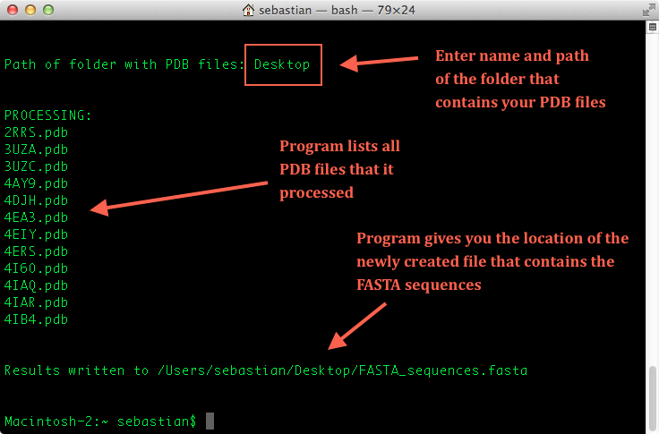
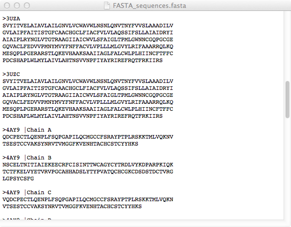

The PDB To FASTA web converter is very handy if you want to convert one or a
small number of PDB files. However, it might be very inconvenient to convert each
file individually, especially if you have a whole lot of PDB files.
For this case, I have written a desktop program that extracts the 1-letter aminoacid FASTA sequences from all your PDB files at once!
Note: It also supports nucleic acid PDB files.
Applications in Scientific Research:
Naveen Chakicherla (2013). Structural Classification of Allergen IgE Epitopes by Hierarchical Clustering. Computational Crystallography Newsletter (2013). 4, 36-42Basically, there is not much to explain:
1) Click on the program to start it
2) Enter the target folder of your PDB files
3) Enjoy all your FASTA sequences bundled in a single FASTA file

As you can see in the screenshot of the FASTA output file, the program will also
generate chain IDs if there are multiple sequences in a PDB file.

| Mac OS X | v 1.1 |
| Linux (Ubuntu) | v 1.0 |
| Linux (CentOS) | v 1.0 |
| Linux (RedHat) | v 1.1 |
| Windows | v 1.0 |
Note:
If you have a particular LinuxDistro that does not support the current Linux version of PDB to FASTAconverter, please let me know, and I will try to compile the appropriate version for you.